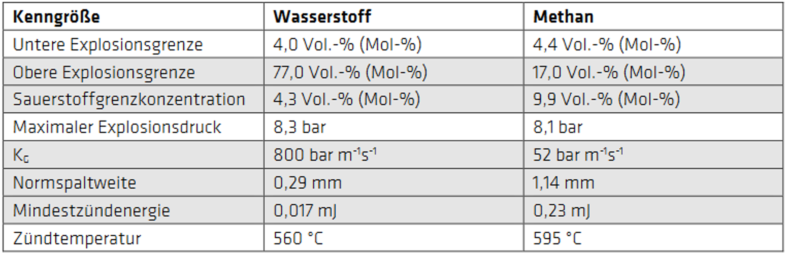
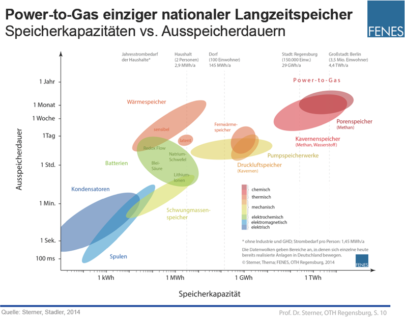

Is hydrogen explosive?
When discussing the explosive nature of hydrogen, the terms “explosive” and “explosive mixture” are often confused.
The following table compares the various properties of hydrogen and methane.
[1]

[1]
Is the energy density of hydrogen too low?
People often say that hydrogen’s energy density is too low. But is that true? The most common reason for this is the confusion between volumetric and gravimetric energy density. Hydrogen has an energy density of 0.53 kWh per liter at 200 bar. However, in terms of mass, it has an energy density of 33.3 kWh per kilogram. In comparison, natural gas has an energy density of 2.58 kWh per liter at a pressure of 200 bar and, in terms of mass, an energy density of 13.9 kWh per kilogram. It can be seen that natural gas at 200 bar has nearly 5 times the energy density of hydrogen. However, this refers to volumetric energy density, not gravimetric energy density. Hydrogen therefore has a gravimetric energy density nearly 2.5 times higher than that of natural gas. [2]
So generally you cannot say hydrogen has a lower energy density!
Is hydrogen storable and transportable?
Hydrogen cars by BMW: In 1990, BMW produced its first hydrogen-powered car. One initial concern regarding the hydrogen tank, which was cooled to -253°C, was that there would be excessive permeation losses. Permeation losses refer to losses resulting from outgassing. However, the hydrogen-powered BMW 7 had two key differences from today’s hydrogen cars. First, it was an internal combustion engine vehicle (ICEV) and therefore had lower efficiency than a fuel cell vehicle (FCV); second (and this is crucial), BMW had opted for liquefied hydrogen. To this end, an insulated tank was developed that allowed the hydrogen to escape in a controlled manner as pressure built up due to evaporation. As a result, the tank was nearly empty after a prolonged period of inactivity. This led to the myth that hydrogen cannot be stored long-term. Today, however, H2 is stored in pressure tanks that do not experience any hydrogen losses.
Furthermore, while many other manufacturers are focusing on battery-powered cars, BMW continues to produce hydrogen-powered vehicles. This is because BMW considers fuel cells, such as those in the BMW iX5, as worthwhile. [3]
Storage of hydrogen in a laboratory
Hydrogen must be stored in pressurized gas cylinders in a well-ventilated area. These gas cylinders must be labeled with safety and warning labels, as hydrogen is a highly flammable gas. Therefore, electrical systems and equipment in the vicinity must meet certain regulations. Finally, it is also very important that hydrogen gas tanks are not stored together with other gas tanks. [4]
Comparison of storage systems for electricity generated from renewable energy sources (RES) with those using fossil fuels

100% green hydrogen near Dortmund
Holzwickede is a community near Dortmund that is now being supplied with green hydrogen via a natural gas pipeline.
This climate-neutral hydrogen is Quality 3.0, meaning it has a purity of 99.9%.
The pipeline is fed by a hydrogen storage facility, where the green hydrogen is stored at 42 bar.
Westnetz had previously tested adding more than the required 10% hydrogen to natural gas without encountering any problems.
Furthermore, no new issues arose with 100% hydrogen as a substitute for natural gas.
So it was clear that the natural gas grid could be filled with 100% green hydrogen.
[5]
Is the efficiency of hydrogen too low?
The overall efficiency of hydrogen is comprised of several efficiency factors:
[6]
Generation of green energy: ~70% (Efficiency varies depending on the share of each generation source (hydropower, wind power, solar))
Alkaline elektrolysis: 80%
Compression to 1 000 bar: 88%
Transport: 99%
PEM fuel cell: 70%
Overall efficiency: 34%
Comparison: Efficiency of Gasoline:
[6]
Well-To-Tank: 82% (No individual data available ranging from production to the vehicle)
Combustion: 18% (real urban traffic)
Overall efficiency: 15%
For comparison: Nature's efficiency

The efficiency of photosynthesis is rather low at about 1%. Therefore, it is not useful to consider efficiency alone, as what matters is a systemic view of an energy system. Alternatives to physical storage, such as rechargeable batteries, are more efficient, but they lack the required capacity and are unable to meet seasonal storage needs!
Hydrogen as an energy source with greater storage capacity

Is hydrogen technology too expensive??
Over the past few years, the amount of platinum used in PEM fuel cells has been drastically reduced, and a 120 kW fuel cell vehicle (FCV) contains just 5 grams more platinum than a gasoline-powered vehicle—though this platinum is recyclable. Furthermore, hydrogen production is significantly more economical in regions with strong solar radiation (Spain/North Africa) and strong winds (North Sea/Alaska), and it is expected that as hydrogen technology becomes more widely used, prices will continue to drop. [7]
Production costs for various types of hydrogen in 2019 and projections for 2030 and 2050
Price in ct per kWh H2
 [8]
[8]
Import price of natural gas
Monthly development since 2013 in ct per kWh
 [9]
[9]
The import price per terajoule of natural gas stood at 4,481.73 euros in April 2021.
In just 11 months, this rose by approximately 330 percent, or by more than
10,000 euros, to 14,756.39 euros per terajoule of natural gas.
One month later, in April 2022, the price stood at 17,941.65 euros.
This was 21.6 percent higher than the price in March and approximately 300 percent higher than the price a year earlier, in April 2021.
Thus, the price per kWh of natural gas in April 2021 was 1.6 cents and just one year later, 6.46 cents.
These sharp price fluctuations are due to the instability of the political situation in the producer countries.
[10]
Predictions for the long term suggest that natural gas will cost between 2 and 6.6 cents per kWh, depending on the scenario.
By comparison, forecasts indicate that the production costs of hydrogen will range from 6 to 12 cents per kWh.
[11]
In addition, the cost of making the gas grid H2-ready would amount to approximately
45 billion euros over a period of 30 years.
That is 1.5 billion per year, which corresponds to approximately one-quarter of the routine replacement investments made to date.
By comparison, the incremental costs of the REL (Renewable Energy law; in Germany called EEG) amounted to more than 20 billion euros between 2015 and 2020.
[12]